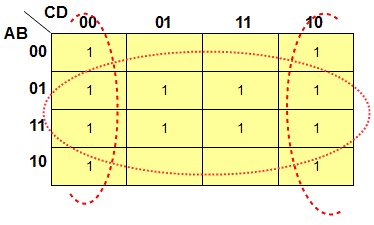

<div id="jsn-maincontent" class="span9 order1  row-fluid">
					<div id="jsn-maincontent_inner">
						<div id="jsn-centercol"><div id="jsn-centercol_inner">
									<div id="jsn-mainbody-content" class=" jsn-hasmainbody">
								<div id="jsn-mainbody-content-inner1"><div id="jsn-mainbody-content-inner2"><div id="jsn-mainbody-content-inner3"><div id="jsn-mainbody-content-inner4" class="row-fluid">
								
										
								
								<div id="jsn-mainbody-content-inner" class="span12 order1 ">
		
										<div id="jsn-mainbody">
										<div id="system-message-container">
	</div>

										<div class="item-page" itemscope itemtype="https://schema.org/Article">
	<meta itemprop="inLanguage" content="en-GB" >
	
		
						
		
	
	
		
								<div itemprop="articleBody">
		<p></p>
<h1 style="text-align: center;">Manipulating Boolean using Karnaugh maps</h1>
<p class="NormalContent"><strong>Another example using 3 inputs</strong></p>
<p>Consider this truth table:</p>
<p></p>
 
<p>Will first plot where the output is a 1 on a Karnaugh map.</p>
<p></p>
<p>Now we will group the ones.</p>
<p></p>
<p>The Boolean equation is therefore:</p>
<p>B + A.<span style="text-decoration: overline;">C</span> = Q</p>
<p>You should now produce the long form of the Boolean equation directly from the truth table, and then use the Boolean laws to simplify it, as we did in the worked example before. You should get the same equation as for the Karnaugh map if you can simplify the equation successfully.</p>
<p><strong>A 2 input example</strong><br><span style="line-height: 16.3636360168457px;">Consider this truth table:</span></p>
<p></p>
<p><span style="line-height: 16.3636360168457px;">Will first plot where the output is a 1 on a Karnaugh map.</span></p>
<p><span style="line-height: 16.3636360168457px;"></span></p>
<p><span style="line-height: 16.3636360168457px;">Now we will group the ones.</span></p>
<p></p>
<p>In the horizontal grouping, A is always a 1 but B changes, so B is redundant. The Boolean expression for this group is A.&nbsp;<br><span style="line-height: 16.3636360168457px;">In the vertical grouping, B is always a 1 but A changes, so A is redundant. The Boolean expression for this group is B.&nbsp;</span></p>
<p><span style="line-height: 16.3636360168457px;">The final equation is therefore:</span></p>
<p><span style="line-height: 16.3636360168457px;">A + B = Q</span></p>
<p><span style="line-height: 16.3636360168457px;">You should recognise this! It's the Boolean equation for an OR logic gate!</span></p>
<p><span style="line-height: 16.3636360168457px;"><strong style="line-height: 16.3636360168457px;">A 4 input example</strong><br style="line-height: 16.3636360168457px;" ><span style="line-height: 16.3636360168457px;">Consider this truth table:</span></span></p>
<p><span style="line-height: 16.3636360168457px;"><span style="line-height: 16.3636360168457px;"></span></span></p>
<p><span style="line-height: 16.3636360168457px;"><span style="line-height: 16.3636360168457px;"><span style="line-height: 16.3636360168457px;">Will first plot where the output is a 1 on a Karnaugh map.</span></span></span></p>
<p><span style="line-height: 16.3636360168457px;"><span style="line-height: 16.3636360168457px;"><span style="line-height: 16.3636360168457px;"></span></span></span></p>
<p><span style="line-height: 16.3636360168457px;"><span style="line-height: 16.3636360168457px;"><span style="line-height: 16.3636360168457px;"><span style="line-height: 16.3636360168457px;">Now we will group the ones. Remember! We are always aiming <span style="line-height: 16.3636360168457px;">for the largest groups possible with the fewest number of groups.</span></span></span></span></span></p>
<p><span style="line-height: 16.3636360168457px;"><span style="line-height: 16.3636360168457px;"><br>In the horizontal grouping, B is the only term that doesn't change. In the grouping that takes in the left and right sides, <span style="text-decoration: overline;">D</span> is the only term that doesn't change. The output Q is therefore:</span></span></p>
<p><span style="line-height: 16.3636360168457px;"><span style="line-height: 16.3636360168457px;">B + <span style="line-height: 16.3636360168457px; text-decoration: overline;">D</span>&nbsp;= Q</span></span></p>
<p></p>	</div>

	
							</div>

									</div>
				
							</div>
							
				        							
							
							</div></div></div></div></div>			
							
							
		        				</div></div> 
				</div></div>